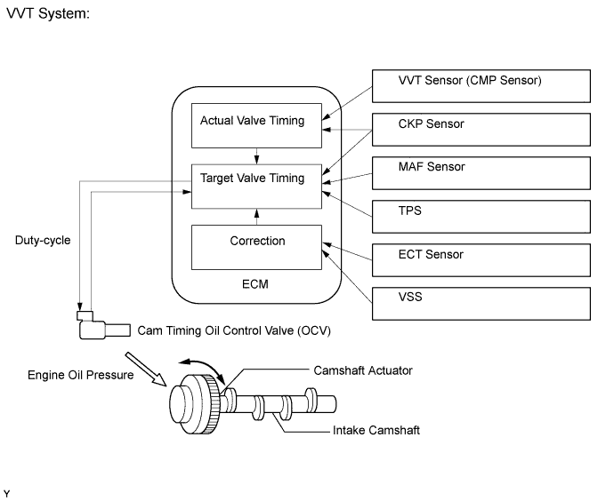
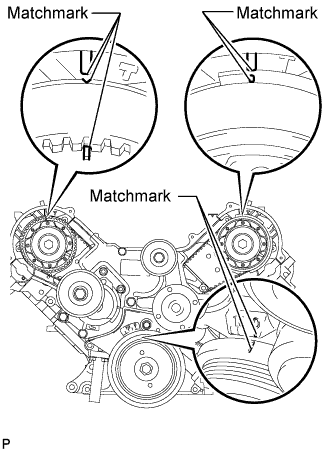
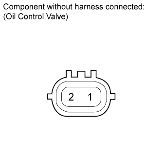
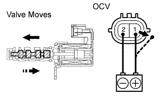
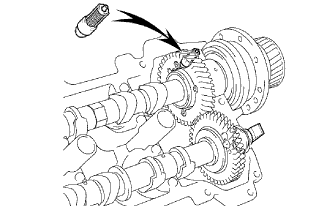

DTC P0011 Camshaft Position "A" - Timing Over-Advanced or System Performance (Bank 1) |
DTC P0012 Camshaft Position "A" - Timing Over-Retarded (Bank 1) |
DTC P0021 Camshaft Position "A" - Timing Over-Advanced or System Performance (Bank 2) |
DTC P0022 Camshaft Position "A" - Timing Over-Retarded (Bank 2) |

| DTC Code | DTC Detection Condition | Trouble Area |
| P0011 P0021 | The valve timing is not adjusted in the valve timing advance range (1 trip detection logic). |
|
| P0012 P0022 | The valve timing is not adjusted in the valve timing retard range (2 trip detection logic). |
|
| Abnormal Bank | Advanced Timing Over (Valve Timing is Out of Specified Range) | Retarded Timing Over (Valve Timing is Out of Specified Range) |
| Bank 1 | P0011 | P0012 |
| Bank 2 | P0021 | P0022 |
| 1.CHECK ANY OTHER DTCS OUTPUT (IN ADDITION TO DTC P0011, P0012, P0021 OR P0022) |
Connect the intelligent tester to the DLC3.
Turn the engine switch on (IG) and turn the tester on.
Enter the following menus: Powertrain / Engine and ECT / DTC.
Read DTCs.
| Result | Proceed to |
| P0011, P0012, P0021 or P0022 is output | A |
| P0011, P0012, P0021 or P0022 and other DTCs are output | B |
|
| ||||
| A | |
| 2.PERFORM ACTIVE TEST USING INTELLIGENT TESTER (OPERATE OCV) |
Connect the intelligent tester to the DLC3.
Start the engine and turn the tester on.
Warm up the engine.
Enter the following menus: Powertrain / Engine and ECT / Active Test / Control the VVT System (Bank 1) or Control the VVT System (Bank 2).
Check the engine speed while operating the Camshaft Oil Control Valve (OCV) using the tester.
| Tester Operation | Specified Condition |
| OCV OFF | Normal engine speed |
| OCV ON | Engine idles roughly or stalls (soon after OCV switched from OFF to ON) |
|
| ||||
| OK | |
| 3.CHECK WHETHER DTC OUTPUT RECURS (DTC P0011, P0012, P0021 OR P0022) |
Connect the intelligent tester to the DLC3.
Turn the engine switch on (IG) and turn the tester on.
Clear DTCs (Click here).
Start the engine and warm it up.
Switch the ECM from normal mode to check mode using the tester.
Drive the vehicle for more than 10 minutes.
Read DTCs using the tester.
|
| ||||
| OK | ||
| ||
| 4.CHECK VALVE TIMING (CHECK FOR LOOSE AND JUMPED TOOTH OF TIMING BELT) |
 |
Remove the drive belt (Click here).
Remove the timing belt cover LH and RH (Click here).
Turn the crankshaft to align the matchmarks of the crankshaft.
Align the notch of the crankshaft pulley with the "0" position.
Confirm whether the matchmarks of the camshaft pulley and cylinder head cover are facing each other.
If the matchmarks are not facing each other, turn the crankshaft clockwise by 360°. Confirm again if the matchmarks are facing each other.
|
| ||||
| OK | |
| 5.INSPECT CAM TIMING OIL CONTROL VALVE ASSEMBLY (OCV) |
  |
Remove the OCV.
Measure the resistance according to the value(s) in the table below.
| Tester Connection | Condition | Specified Condition |
| 1 - 2 | 20°C (68°F) | 6.9 to 7.9 Ω |
Apply positive battery voltage to terminal 1 and negative battery voltage to terminal 2. Check the valve operation.
|
| ||||
| OK | |
| 6.INSPECT OIL CONTROL VALVE FILTER |
 |
Remove the cylinder head cover (Click here).
Remove the camshaft bearing cap and OCV filter.
Check that the filter is not clogged.
|
| ||||
| OK | |
| 7.REPLACE CAMSHAFT TIMING TUBE ASSEMBLY |
Replace the camshaft timing tube assembly.
| NEXT | |
| 8.CHECK WHETHER DTC OUTPUT RECURS |
Connect the intelligent tester to the DLC3.
Turn the engine switch on (IG) and turn the tester on.
Clear DTCs (Click here).
Start the engine and warm it up.
Switch the ECM from normal mode to check mode using the tester.
Drive the vehicle for more than 10 minutes.
Read output DTCs using the tester.
|
| ||||
| OK | ||
| ||